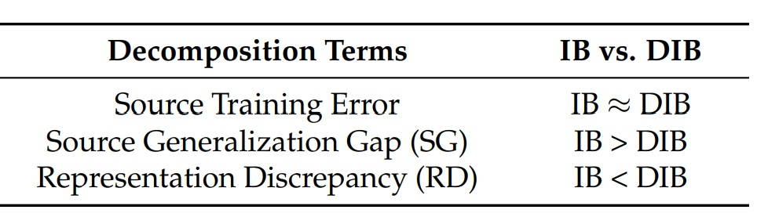
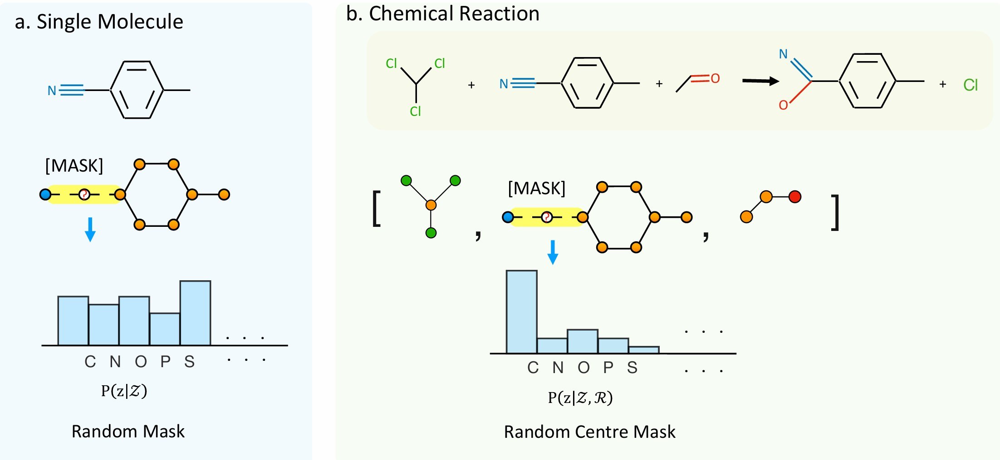

Academic Experience
Education
- 2017/09 to 2021/07. Bachelor Student, majored in Mathematics and Applied Mathematics, at University of Chinese Academy of Sciences (UCAS).
- 2020/02 to 2020/06. Visiting Student, majored in Mathematics, at Ecole Polytechnique Federale de Lausanne (EPFL).
- 2021/03 till now. Research Intern, at ATOM Lab, Institute of AI Industry Research (AIR), Tsinghua University. Academic Supervisor: Prof. Yanyan Lan.
- 2025/05 till now. Research Intern, at Seed-AI for Science, ByteDance.
- 2021/09 till now. PhD Candidate, majored in Probability and Statistics, at Academy of Mathematics and Systems Science (AMSS), Chinese Academy of Sciences (CAS). Academic Supervisor: Academician Zhi-Ming Ma.
Publications
Google Scholar / Semantic Scholar / OpenReview / ResearchGate
Revisiting Sampling Strategies for Molecular Generation
Yuyan Ni, Shikun Feng, Wei-Ying Ma, Zhi-Ming Ma, Yanyan Lan
GenBio workshop, ICML 2025
FIGRDock: Fast Interaction-Guided Regression for Flexible Docking
Shikun Feng, Bicheng Lin, Yuanhuan Mo, Yuyan Ni, Wenyu Zhu, Bowen Gao, Wei-Ying Ma, Haitao Li, Yanyan Lan
GenBio workshop, ICML 2025
Beyond Efficiency: Molecular Data Pruning for Enhanced Generalization
Dingshuo Chen, Zhixun Li, Yuyan Ni, Guibin Zhang, Ding Wang, Qiang Liu, Shu Wu, Jeffrey Xu Yu, Liang Wang
NeurIPS 2024
Paper
Rethinking Specificity in SBDD: Leveraging Delta Score and Energy-Guided Diffusion
Bowen Gao, Minsi Ren, Yuyan Ni, Yanwen Huang, Bo Qiang, Zhi-Ming Ma, Wei-Ying Ma, Yanyan Lan
ICML 2024
Paper

{kind=link}


Fractional denoising for 3d molecular pre-training
Shikun Feng*, Yuyan Ni*, Yanyan Lan, Zhi-Ming Ma, Wei-Ying Ma, *Equal Contribution
ICML 2023
Paper / Code / Poster / Talk_5min / Talk_15min

Preprints

Service
- Reviewer: NeurIPS 2024, ICLR 2025, NeurIPS 2025.
- Talks:
- Oral presentation at the annual meeting of the Chinese Society for Industrial and Applied Mathematics (CSIAM) in 2022 for the paper "Elastic Information Bottleneck".
- Oral presentation at the 2024 International Conference on Data Science and Brain-Inspired Intelligence.
© Yuyan's site. All Rights Reserved.